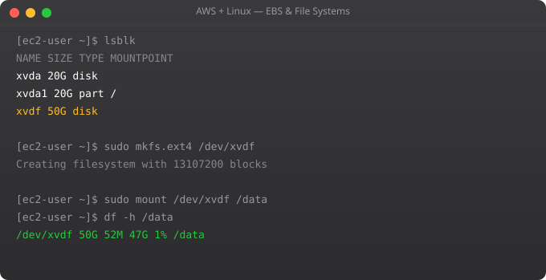

Nginx (pronounced "engine-x") is the most popular web server in the world, running over 30% of all websites. It handles static files with extreme efficiency and is an excellent reverse proxy for application servers. Installing and configuring Nginx is usually one of the first things you do on a new EC2 instance.
sudo apt update
sudo apt install nginx -y
sudo systemctl status nginx # Should show active (running)
sudo systemctl enable nginx # Start on reboot
# Open port 80 in security group (if not already)
# AWS Console: EC2 > Security Groups > your-sg > Edit inbound rules
# Add: HTTP, Port 80, Source 0.0.0.0/0
# Test from browser:
# http://YOUR-PUBLIC-IP
# You should see the Nginx welcome page/etc/nginx/nginx.conf # Main config file
/etc/nginx/sites-available/ # Virtual host configs (inactive)
/etc/nginx/sites-enabled/ # Virtual host configs (active, symlinks)
/var/www/html/ # Default web root
/var/log/nginx/access.log # Access logs
/var/log/nginx/error.log # Error logs
# Test config before applying
sudo nginx -t
# Reload without downtime
sudo systemctl reload nginx
# Restart (briefly drops connections)
sudo systemctl restart nginx# Create website directory
sudo mkdir -p /var/www/mysite
sudo chown ubuntu:ubuntu /var/www/mysite
# Create a test page
echo "<h1>Hello from EC2!</h1>" > /var/www/mysite/index.html
# Create virtual host config
sudo nano /etc/nginx/sites-available/mysite
# Config content:
server {
listen 80;
server_name mysite.example.com;
root /var/www/mysite;
index index.html;
location / {
try_files $uri $uri/ =404;
}
access_log /var/log/nginx/mysite-access.log;
error_log /var/log/nginx/mysite-error.log;
}
# Enable the site
sudo ln -s /etc/nginx/sites-available/mysite /etc/nginx/sites-enabled/
sudo nginx -t && sudo systemctl reload nginx# Your app runs on port 8000 (gunicorn, uvicorn, node, etc.)
# Nginx listens on 80, forwards to app
server {
listen 80;
server_name api.example.com;
location / {
proxy_pass http://127.0.0.1:8000;
proxy_set_header Host $host;
proxy_set_header X-Real-IP $remote_addr;
proxy_set_header X-Forwarded-For $proxy_add_x_forwarded_for;
proxy_set_header X-Forwarded-Proto $scheme;
proxy_connect_timeout 10s;
proxy_read_timeout 60s;
}
}# Install certbot
sudo apt install certbot python3-certbot-nginx -y
# Get certificate (replace with your domain)
sudo certbot --nginx -d yourdomain.com -d www.yourdomain.com
# Follow prompts -- certbot auto-modifies nginx config!
# Auto-renewal (certbot installs a cron/timer automatically)
sudo certbot renew --dry-run # Test renewal
# Verify SSL
curl -I https://yourdomain.com
# Should show: HTTP/2 200Nginx is event-driven and handles thousands of concurrent connections with low memory. Apache uses a thread-per-connection model which uses more memory under high load. Nginx is preferred for high-traffic sites and as a reverse proxy. Apache has more module ecosystem and is easier to configure per-directory with .htaccess.
A reverse proxy sits in front of your application server. Clients connect to Nginx on port 80/443. Nginx forwards requests to your app (Python on 8000, Node on 3000) and returns responses. Benefits: SSL termination, load balancing, caching, and hiding the app server.
Create separate config files in sites-available for each domain. Each server block has a different server_name. Nginx routes traffic to the correct block based on the Host header. One EC2 can serve dozens of domains.
reload (sudo nginx -s reload or systemctl reload nginx) re-reads config files while keeping existing connections alive -- zero downtime. restart terminates all connections and restarts the process -- brief interruption. Always use reload unless restart is specifically needed.
tail -f /var/log/nginx/access.log follows the log live. tail -f /var/log/nginx/error.log for errors. Add goaccess for a real-time terminal dashboard: sudo apt install goaccess; goaccess /var/log/nginx/access.log --log-format=COMBINED
In Part 6, we use AWS S3 from the Linux command line -- uploading files, syncing directories, and hosting static websites.
← Back to Blog# /etc/nginx/nginx.conf
worker_processes auto; # Match CPU cores
worker_rlimit_nofile 65535; # Max open files per worker
events {
worker_connections 4096; # Per worker (total = workers * connections)
use epoll; # Linux event model
multi_accept on;
}
http {
# Performance
sendfile on; # Kernel-level file sending
tcp_nopush on;
tcp_nodelay on;
keepalive_timeout 65;
keepalive_requests 1000;
# Compression (reduce bandwidth 60-70%)
gzip on;
gzip_types text/plain text/css application/json application/javascript text/xml;
gzip_min_length 1000;
gzip_comp_level 6;
# Buffers
client_body_buffer_size 16k;
client_max_body_size 50m; # Max upload size
client_body_timeout 15;
client_header_timeout 15;
# Security headers
add_header X-Frame-Options SAMEORIGIN;
add_header X-Content-Type-Options nosniff;
add_header X-XSS-Protection "1; mode=block";
add_header Strict-Transport-Security "max-age=31536000" always;
server_tokens off; # Hide nginx version
}upstream app_servers {
least_conn; # Route to server with fewest connections
server 10.0.1.10:8000 weight=3; # Gets 3x more traffic
server 10.0.1.11:8000 weight=1;
server 10.0.1.12:8000 backup; # Only used if others fail
keepalive 32; # Persistent connections to upstream
}
server {
listen 80;
server_name api.example.com;
location / {
proxy_pass http://app_servers;
proxy_set_header Host $host;
proxy_set_header X-Real-IP $remote_addr;
# Health check
proxy_next_upstream error timeout http_502 http_503;
proxy_next_upstream_tries 2;
}
# Health check endpoint (no logging)
location /health {
access_log off;
proxy_pass http://app_servers;
}
}